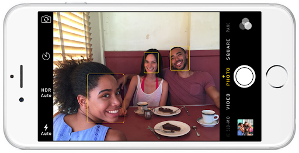

Facial Recogntion
Face Detection
Face detection is the name of the process a computer uses to find faces in an image. You may have noticed that iPhones use face detection technology to focus on faces for photos. But how does the computer find the faces? Computers don't "see" images in the same way you and me do. Instead, they analyze images at the pixel level. By comparing each pixel in an image to pixels next to it, the algorithm finds the gradient patterns in the image. This means that it transfers everything in the image into sets of lines that show edges in the image. The computer then analyzes the edges and identifies any shapes that resemble human faces.
